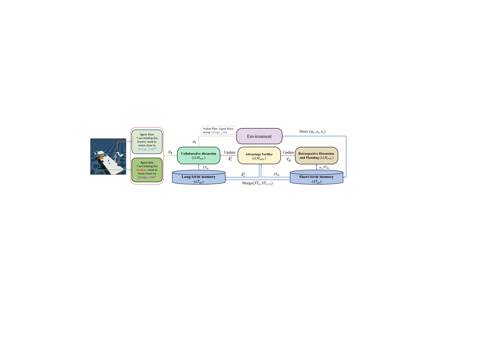
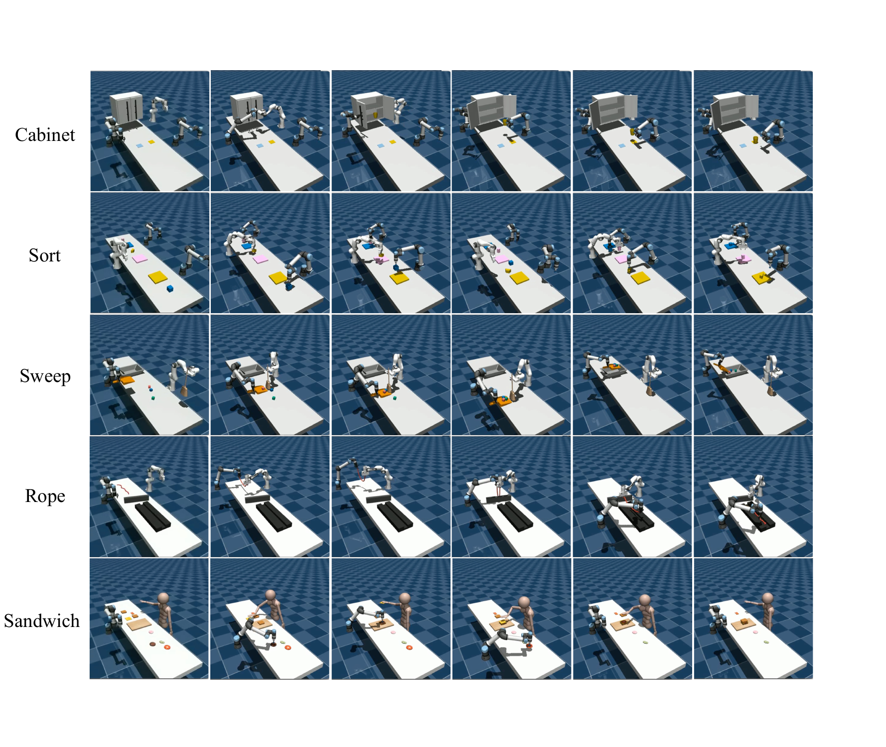
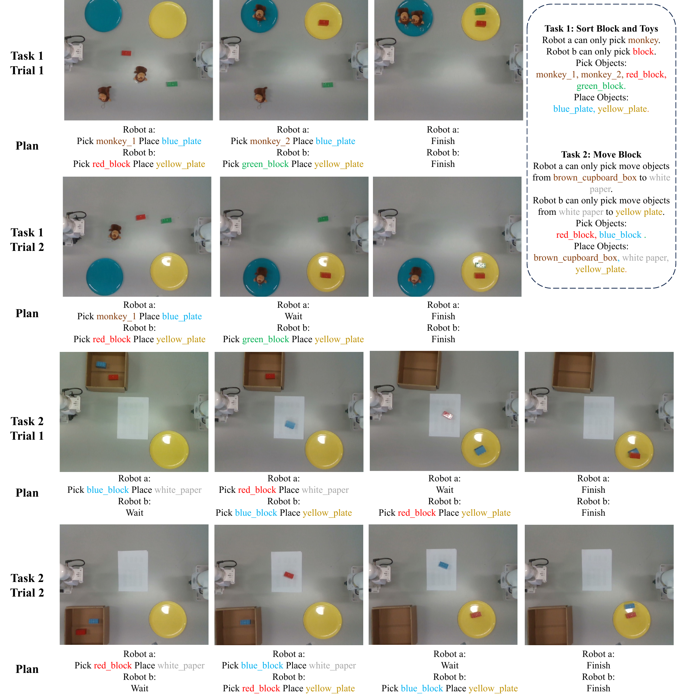

Integrating Advantage Actor-Critic in Multi-Robot Collaboration
IEEE Robotics and Automation Letters
NYU Tandon School of Engineering · NYUAD Center for Artificial Intelligence and Robotics (CAIR) · Embodied AI and Robotics (AIR) Lab, NYU Abu Dhabi
† Equal contribution · * Corresponding authors
Abstract
Recent advances in large language models (LLMs) have spurred interest in using these models to coordinate multi-agent robot systems. However, existing approaches often fail to handle dynamic and complex environments effectively. We present A2C-Collab, an advantage actor critic framework tailored to multi-robot collaboration. A2C-Collab contains three major components: (1) an actor generates time-critical commands for each robot to execute, and (2) a critic monitors execution and recommends corrections when plans fail. (3) An advantage mechanism verifies these corrections by forecasting their impact on subsequent environmental dynamics. While previous methods primarily relied on the critic to enhance collaboration, they often lacked a verification mechanism, allowing the critic to unintentionally guide agents away from the correct goal. In contrast, our approach introduces an advantage verification stage that anticipates and evaluates the impact of corrective actions before execution, ensuring more reliable and goal-aligned coordination. The framework was first evaluated in RoCoBench, a standard multi-robot simulation, and subsequently deployed to a physical robot cluster. Across both settings, A2C-Collab improved task completion rates compared with the state-of-the-art baselines, demonstrating robust performance and highlighting the promise of LLM-driven reasoning in real-world multi-robot systems.
Method
A2C-Collab adapts the advantage actor-critic paradigm to language-grounded multi-robot coordination using three dedicated LLMs and a dual-memory structure:
- Actor (LLMact) — generates time-critical symbolic actions (PICK, PLACE, MOVE, SWEEP, WAIT) for each robot from the current state, role, and shared goal. Outputs are parsed to SE(3) waypoints and validated with inverse kinematics before execution.
- Critic (LLMcrit) — diagnoses execution failures from environment feedback (e.g., IK errors, collisions) and proposes corrections.
- Advantage Verifier (LLMadv) — estimates an advantage score Âti = Qψ(st, ati + Δati) − Vφ(st) and only accepts corrections with positive advantage, preventing the critic from steering agents away from the goal.
- Dual memory — short-term memory STm stores the current dialog round; long-term memory LTm retains the two most recent verified rounds as context for the next planning cycle.

Results
RoCoBench simulation
Across five collaborative tasks (Cabinet, Sweep, Sandwich, Sort, Rope), A2C-Collab reaches an average success rate of 0.39, versus 0.31 for the actor-critic baseline and 0.21 for RoCo, without increasing dialog steps or replans. The largest gain is on Arrange Cabinet (0.40 → 0.53).

Real-world deployment
Deployed on UFactory 850 (6 DoF) and UFactory 7 (7 DoF) arms with a RealSense top-down camera and OWL-ViT scene parsing, A2C-Collab achieves 0.95 executable rate and 0.90 success rate averaged over Sort Block & Toy and Move Block tasks (10 trials each).

Ablations
Two-round memory clearly outperforms single-round memory on multi-step tasks (Make Sandwich: 0.07 → 0.33; Sort Cubes: 0.07 → 0.40). Model-size ablations on the critic and verifier confirm that the advantage-verification stage, not the actor's scale, drives the improvement.
Videos
RoCoBench simulation
Rollouts of A2C-Collab on the five RoCoBench collaborative tasks.
Real-world deployment
A2C-Collab deployed on UFactory 850 and UFactory 7 arms.
Citation
If you find this work useful, please cite:
@article{liang2026a2ccollab,
title = {Integrating Advantage Actor-Critic in Multi-Robot Collaboration},
author = {Liang, Jiazhao and Huang, Hao and Hao, Yu and
Bethala, Geeta Chandra Raju and Wen, Congcong and
Yuan, Shuaihang and Tzes, Anthony and Fang, Yi},
journal = {IEEE Robotics and Automation Letters},
year = {2026}
}Code
Source code and instructions are available on GitHub.